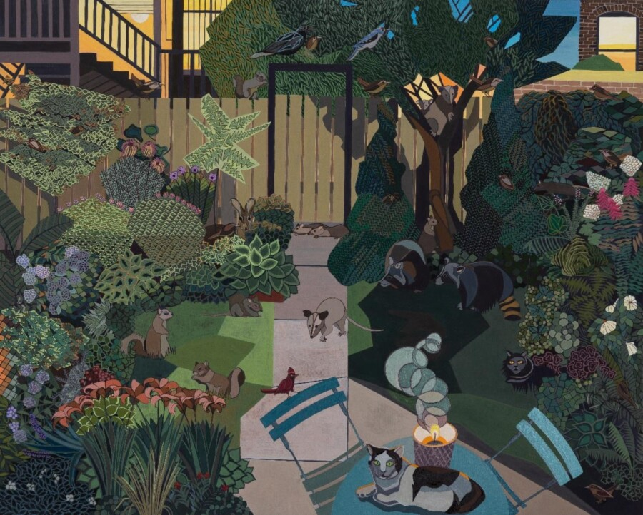

Ann Toebbe: Cooler by the Lake
Ann Toebbe’s ongoing series, Cooler by the Lake, is set in Hyde Park. For nearly two decades, Toebbe has lived in this Southside Chicago neighborhood with her husband, working and raising her two daughters and stepson. Toebbe’s domestic paintings explore the people, places, culture, and climate that are woven into her daily routine as a working artist and mother—home, garden, studio, grocery store, bakery, park, and local school. Her densely composed multi-point-of-view vignettes capture the sensory impressions and memory layers accumulated in hours and days spent in Hyde Park, meditating on the realization that this is the neighborhood her children know as home and where Toebbe and her husband will grow old.
Originally from Cincinnati, Ohio, Ann Toebbe received her BFA from the Cleveland Institute of Art in 1997. She earned an MFA in painting from Yale University in 2004 and a DAAD Scholarship to the Universität der Kunst, Berlin in 2004-05. The primary focus of her paintings is domestic life. Toebbe’s process is labor intensive, employing freehand painting, flat geometry, geometric abstraction and intricate patterning. Her paintings are often multi-media works with furniture and objects collaged on the surface cut from paper the artist paints in her studio. Her compositions play with flatness and multiple points of views. Each painting can simultaneously have inside and outside views, views from above, and objects and figures portrayed from a straight on view.